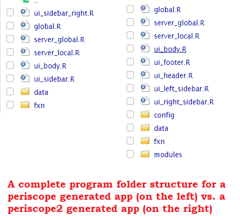

Overview
periscope2 is a scalable and UI-standardized ‘shiny’ framework including a variety of developer convenience functions with the goal of both streamlining robust application development and assisting in creating a consistent user experience regardless of application or developer.
periscope2 is full of developer-friendly features such as:
- Predefined but flexible templates for new Shiny applications with a default bs4Dash layout
- Separation by file of functionality that exists in one of the three shiny scopes: global, server-global, and server-local
- Generated applications are organized in an easy to follow and maintain folder structure based on files functionality
- Off-the-shelf and ready to be used modules (‘Table Downloader’, ‘Plot Downloader’, ‘File Downloader’ and ‘Reset Application’
- Different methods and tools to alert users and add useful information about application UI and server operations
- Application logger with different levels and a UI tool to display and review recorded application logs
- Application look and feel can be customized easily via ‘www/periscope_style.yaml’ or more advanced via ‘www/css/custom.css’
- Application can make use of JS power by customizing ‘www/js/custom.js’
Create and run sample app for full features demo
periscope2::create_application(name = "demo_app", location = ".", sample_app = T, right_sidebar = T)
shiny::runApp("./demo_app/", launch.browser = T)periscope vs periscope2
periscope is widely regarded and used an enterprise application development aid framework for providing the user with the ability to build a robust shiny applications and dashboards.
periscope is the direct ancestor of periscope2 in which periscope2 took most of its basic philosophy and generated applications structure.
However; as periscope2 is the next generation (iteration) of periscope package, they differ in many aspects as follow:
Underlying frameworks
periscope is dependent on bootstrap 3 supported shiny packages:
While periscope2 is dependent only on bootstrap 4 supported shiny package to bring in more functionality (i.e dashboard functionality, alerts, tool-tips, etc..) and a modernized look and feel:
Generated applications layout
periscope full generated app layouts:
- Left sidebar
- Right sidebar
- Header (only can update title)
- Body
periscope2 full generated app layouts:
- Left sidebar
- Right sidebar
- Header
- Footer
- Body
For periscope2, each part has it own UI R file that can be customized and updated. Each part also has its own dedicated alert panel, including an announcements framework as part of the header.
User can adapt layout for both packages generated apps easily via related functions (refer to r ?periscope and r ?periscope2 for more info)
Generated applications code structure
- Regardless files contents, both packages generated applications share the same first level folder structure:
- Differences in the next level of structure are:
- periscope2 program folder has:
- a dedicated UI R script for each layout part
-
config - folder for storing application different configuration files
- Initially contains announcements module configuration file
-
modules - folder for application shiny modules R scripts

-
www folder that contains the application JS, CSS and theme customization files
- Although generated applications by both frameworks will have the same folder structure, periscope2 generated applications will have two additional files css/custom.css and js/custom.js to hold custom application JS and CSS code
- Both of these files are already linked into the generated app and ready to be used
- Although generated applications by both frameworks will have the same folder structure, periscope2 generated applications will have two additional files css/custom.css and js/custom.js to hold custom application JS and CSS code
- periscope2 program folder has:
Packages modules
- Both packages share the following modules:
- downloadable file
- downloadable plot
- downloadable table
- However, periscope2 has more modules (more to come with each new version) as Announcements module
- The following modules behave differently between the two packages:
- Reset Application
- Logger
NOTE: Check package documentation and vignettes for module details
Old Shiny module style support
While periscope modules can be called either via the old style (callModule) or new style (moduleServer1), periscope2 only supports the new module style. Check migrating to module server article for more related technical info.
fresh package Styling Support
fresh package is used in both packages to style generated applications different parts via configurations rather than code using the ‘www/periscope_style.yaml’ file.
While periscope uses shiny dashboard variables for styling in code and via the ‘www/periscope_style.yaml’ configuration file, periscope2 uses bs4dash related variables . The file key names use related shiny dashboard or bs4dash variables for user friendly styling in both packages.
Installation
periscope2 is available for installation from CRAN
devtools::install_cran("periscope2")and latest development version of periscope2 from GitHub as follows:
devtools::install_github('Aggregate-Genius/periscope2')Examples
These are included to get you started. You can either start with an empty application or an application that includes samples of the components that you can use within your application. There is extensive package documentation and full Vignettes are also available to help you with all the options.
Empty application
library(periscope2)
create_application('emptyapp', location = tempdir())
runApp('emptyapp')Sample application - no right sidebar
library(periscope2)
create_application("sampleapp1", location = tempdir(), sample_app = TRUE)
runApp('sampleapp1')Sample application - including a right sidebar
library(periscope2)
create_application("sampleapp2", location = tempdir(), sample_app = TRUE, rightsidebar = TRUE)
runApp('sampleapp2')